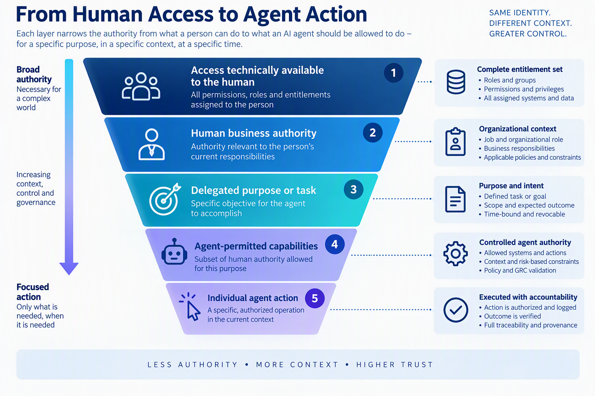
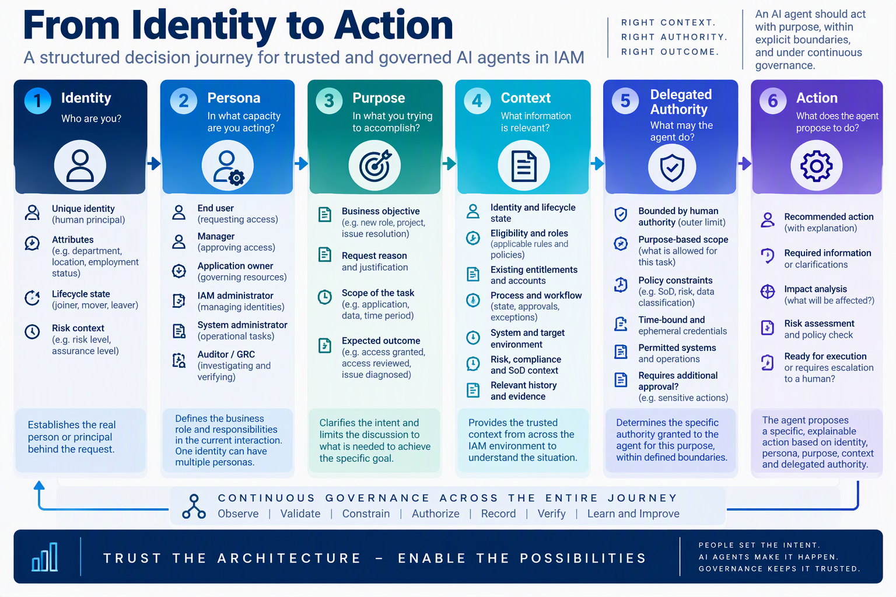
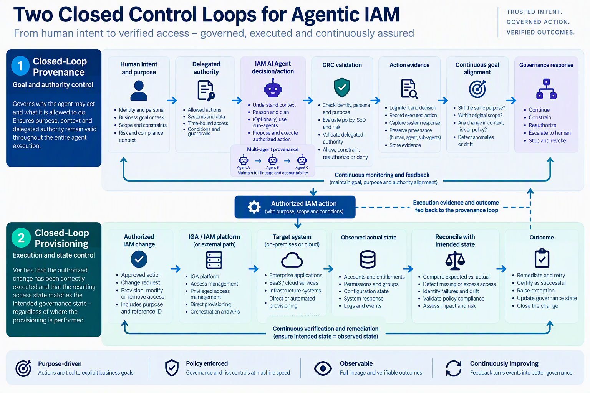
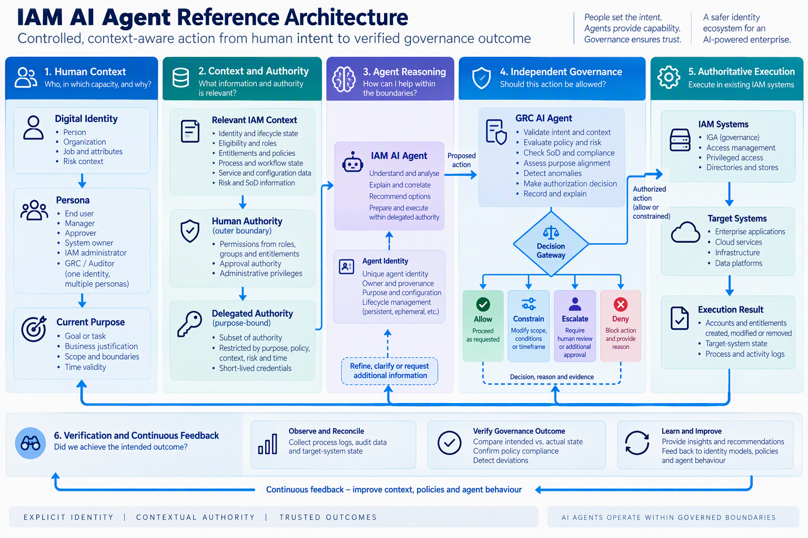
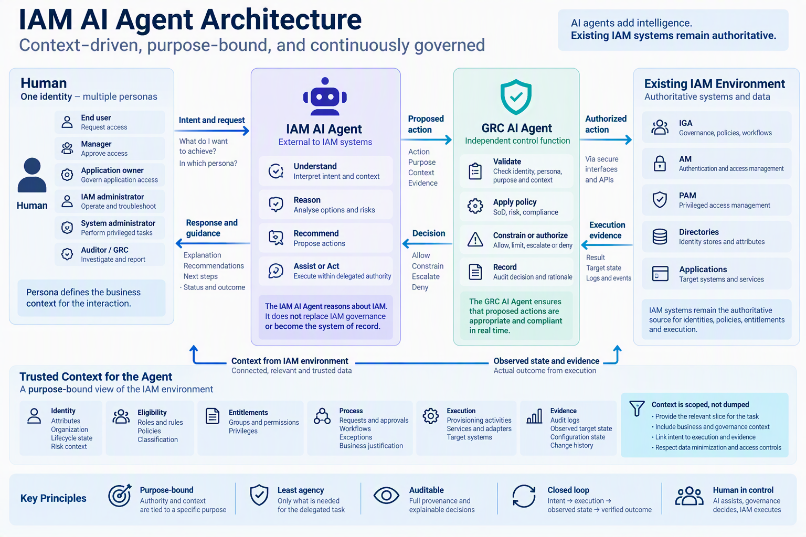
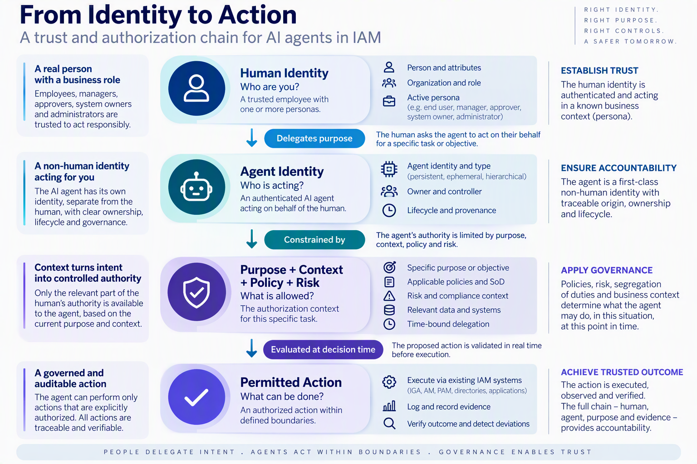

AI agents do not simply create another technical identity-management problem. They change how organizations delegate work and authority. Traditional processes assume that a person stands between access to information and the actions taken with it. With an AI agent, part of that decision-making can move into software.
For people, technical access was moderated by human context and judgement. AI agents move part of that judgement into software. Agentic IAM must therefore make purpose, delegation, context and continuing authority explicit.
Established identity-security principles remain relevant: explicit identity, least privilege, Zero Trust, Just-in-Time access, segregation of duties, auditability and verification. What changes is the granularity, context and speed at which they must be applied. This article distinguishes AI agents whose authority must be governed from IAM AI Agents that assist with operating and governing the identity environment.
What Is Different About Managing Access for AI Agents?
The issue is not only what an agent can access, but what the organization permits the agent to do with that access.
Access Has Never Meant Unlimited Authority
A finance employee may be allowed to open a draft earnings file. That permission does not mean the employee may publish it, upload it to any external service, retain copies indefinitely or use it for an unrelated purpose. The same principle applies to customer, employee, engineering and commercial information.
Technical access answers what can be reached. It does not fully answer what may legitimately be done.
Business purpose, confidentiality obligations, organizational policy, judgement, management expectations and accountability narrow legitimate use.
The Hidden Human Control Layer
Employees, managers, application owners and administrators carry accumulated organizational context into decisions. A manager interprets the meaning of an approval. An owner considers business impact. An administrator understands that technical capability does not make every possible operation appropriate.
For a human actor, permission, context and judgement traditionally come together in the person. For an AI agent, they must become explicit but connected controls.
From Tools to Actors
Traditional software mainly executes a human-selected instruction. An AI agent can receive an objective, gather information, choose intermediate actions and invoke tools without a person selecting every step. IBM describes agentic AI as a shift from systems that inform to systems that act, requiring governance to focus on defining, monitoring and controlling actions and accountability. [IBM 1]
Machine speed magnifies the difference. Discovery, correlation, transformation, decision and communication can occur before a conventional review cycle can intervene.
Valid Access Does Not Mean Valid Use
A finance-analysis agent may legitimately read an unreleased spreadsheet for an authorized employee. If the agent uploads the data to an external benchmarking service that retains a copy, the organization may reject the action even though valid access exists. The concern is intended use: purpose, information, processing, destination, retention, safeguards and authority.
A digital actor can be authorized to access information while a particular use of that information remains prohibited.
Why Existing Access Models Leave a Gap
Organizations simplify access by grouping permissions into roles, groups and entitlements. A person receives a manageable capability bundle for a job even when every capability is not needed for every task. Some broader-than-task access is therefore structural rather than an administrative error.
IBM notes that an agent operating only through a user identity may inherit the user’s full permissions even when the task needs only a narrow subset. IBM also identifies reduced traceability and limited control over which agents may act for which users and operations. [IBM 2]

IAM must therefore derive narrower, temporary and purpose-bound authority from the broader authority legitimately available to the human.
Evolving IAM for Agentic Access
Zero Trust and Just-in-Time access remain the foundation, but autonomy and machine speed require continuous, purpose-aware control.
Evolution, Not Replacement
Zero Trust rejects implicit trust. Just-in-Time (JIT) access reduces standing privilege through temporary, need-based authority. For agents, these mean never inheriting implicit authority and granting only enough authority for the current purpose, context and duration.
Identity, Persona, Purpose and Context
Agent authorization should consider the human principal, meaning the person under whose authority the agent acts; the agent identity; active persona; purpose; context; risk; time; delegation lineage; and proposed action. Persona means the capacity in which the person is acting, for example employee, manager, access approver or system administrator. One identity may have several personas, but an agent should not automatically combine their authority.
Together, identity, persona, purpose and context establish delegated authority: the bounded authority the human principal allows the agent to exercise for the objective.

Purpose-Bound Authority and Least Agency
This article calls the complementary principle least agency. Least agency means that, of the authority potentially available through a human principal, an agent may exercise only the subset needed for the delegated purpose. IBM similarly calls for distinct agent identity, explicit delegation and fine-grained, purpose-bound authorization limited by resources, actions, constraints, scope, duration and intent. [IBM 3]
Two Closed Control Loops
Closed-Loop Provenance: Goal and Authority Control
This article refers to the continuing assurance mechanism as closed-loop provenance. It connects the initiating human, persona, purpose, agent identity, sub-agent lineage, policy context, proposed actions, executed actions and evidence. It asks whether the agent is still pursuing the authorized goal, within scope and under valid authority.
This is active governance, not merely logging. IBM identifies related gaps: standing credentials without point-of-use verification, dynamically accumulated privilege and agent activity that is difficult to distinguish from human activity. [IBM 4]
Provenance verifies that the right agent is still doing the right thing for the right purpose.
Closed-Loop Provisioning: Execution and State Control
Closed-loop provisioning starts with an authorized identity or access change and verifies that the intended state was created, changed or removed in the target environment. It compares intended state with observed state and supports remediation when they differ.
Provisioning verifies that the authorized access change produced the right target-system state.
The Relationship Between the Loops
Closed-loop provenance governs all agent actions, including read-only analysis and recommendations. When provenance permits an action that changes identity or access state, closed-loop provisioning verifies execution and the resulting target state. Read-only or analytical actions remain inside the provenance loop but do not necessarily invoke provisioning.

Traditional Identity Governance and Administration (IGA) can use closed-loop provisioning as a primary assurance mechanism because workflow and policy define the intended change. Agentic IAM needs the broader provenance loop because the agent may interpret goals, choose intermediate actions, invoke other agents and change course before a final transaction.
IAM Is Not the Whole Governance Stack
IAM defines who or what may exercise authority over a resource, but IAM cannot answer every question of acceptable agent behaviour. Data governance defines how information may be treated. AI governance determines which decisions may be automated. Data Loss Prevention and output controls govern what may leave and where. Business controls define transaction limits and approvals. Security operations detect abnormal behaviour. Legal and third-party risk address liability and contractual obligations. These controls must meet at the point of action.
How IAM Agents Could Help
AI can make contextual, evidence-driven IAM practical without becoming the authoritative IAM system.
Context Turns IAM Data into an Explainable Story
The distinctive value of an IAM AI Agent is not merely natural-language interaction. It is correlation. The agent can assemble business purpose, identity state, policy lineage, workflow history, provisioning evidence and observed target state to explain why access exists, why an action is allowed or blocked, and what governed action can happen next.
The agent should receive a purpose-scoped context package rather than an uncontrolled data dump.

Supporting Both Loops
For provenance, the IAM Agent can interpret purpose, relate planned actions to purpose, preserve human-agent-sub-agent lineage, detect context changes and prepare evidence for independent governance. For provisioning, it can correlate authorized intent with execution, compare intended and observed state, identify breaks and propose permitted remediation.
IBM describes the broader governance shift as moving from validating answers toward controlling actions and accountability. The independently governed Governance, Risk and Compliance (GRC) AI Agent proposed here is one approach for applying that control at agent speed. [IBM 1]
Different Personas Need Different Assistance
- End user: understand appropriate access and prepare a scoped request.
- Manager or approver: understand purpose, policy and risk while preserving human accountability.
- System owner: understand who has access, why and where state has drifted.
- IAM administrator: correlate process and target evidence to diagnose failures.
- GRC or auditor: reconstruct authorization, execution and outcome evidence.
Progressive Automation
A sensible maturity path is Describe, Explain, Recommend, Assist and Automate. Automation requires explicit delegated authority, independent governance, deterministic policy enforcement where applicable, complete provenance and post-action verification.
An Example IAM Agent Architecture
Separate reasoning, independent governance, authoritative execution and verification.
The External-Agent Principle
The IAM AI Agent sits outside authoritative IAM platforms. Human identity, persona and intent establish purpose. Trusted context is assembled from IAM and target systems. Only a purpose-bound subset of human authority is delegated. IBM’s secure-agent architecture similarly separates user identity, agent identity and resource authority, using on-behalf-of token exchange and short-lived credentials rather than broad reusable privilege. [IBM 5]

One Agent Acts; Another Governs
The IAM Agent understands, explains, recommends and may initiate actions. A separate GRC Agent evaluates identity, persona, purpose, policy, segregation of duties, risk and context. IBM Agent Identity likewise emphasizes distinct agent identity, ownership, delegated authority, minimally scoped short-lived credentials and accountability. [IBM 6]
The GRC Agent does not replace authoritative policies or human accountability. Where a rule can be expressed deterministically, the policy engine remains authoritative. The GRC Agent supplies contextual interpretation, evidence and orchestration around those controls. The GRC Agent’s own identity, data access, configuration, decision authority and audit trail must be governed.
One agent is optimized to accomplish the task. Another control function is optimized to decide whether the action is appropriate.
Authoritative Execution and Verification
Allowed actions execute through existing IGA, Access Management (AM), Privileged Access Management (PAM), directory or application interfaces using only required authority. Closed-loop provisioning verifies target state. Closed-loop provenance consumes evidence and determines whether authority may continue. Non-success paths include constrain, reauthorize, escalate, deny, stop and revoke.

Trust Moves Into the Architecture
The goal is not to make AI agents behave like people. It is to replace the implicit controls that came with human participation with explicit controls suitable for autonomous execution.
Do not trust an AI agent because it behaves like a trusted employee. Trust the architecture because the agent can operate only within explicit, purpose-bound and continuously verified boundaries.
References
- Bruce Schneier. AI and Trust.
- Angelika Steinacker and Hari Hayagreevan. Governing AI Agents: An Agent-Aware IAM Framework. 2026.
- Franz Wolfhagen. Observability for IVIG in the Age of AI. 2026.
- Franz Wolfhagen. AI Agents and Organizational Authority - Version 2. 2026.
- NIST SP 800-207. Zero Trust Architecture. 2020.
- [IBM 1] IBM. Agentic AI Governance Playbook. https://www.ibm.com/think/insights/agentic-ai-governance-playbook
- [IBM 2] IBM watsonx Orchestrate Blog Team. Why AI agents need their own identities. 2026.
- [IBM 3] IBM Developer. Securing autonomous AI agents: Applying Zero Trust to transform confused deputies into trusted actors. 2026. https://developer.ibm.com/articles/securing-ai-agents/
- [IBM 4] IBM. Agentic AI Identity Management. https://www.ibm.com/solutions/agentic-ai-identity-management
- [IBM 5] IBM Developer. Secure AI agents with IBM watsonx Orchestrate, IBM Verify, and HashiCorp Vault. 2026. https://developer.ibm.com/tutorials/securing-ai-agents/
- [IBM 6] Dinesh Jain. Every Agent Needs an Identity: Announcing IBM Agent Identity Public Preview. IBM Verify Community. 2026.